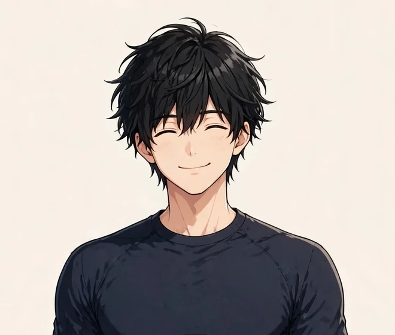
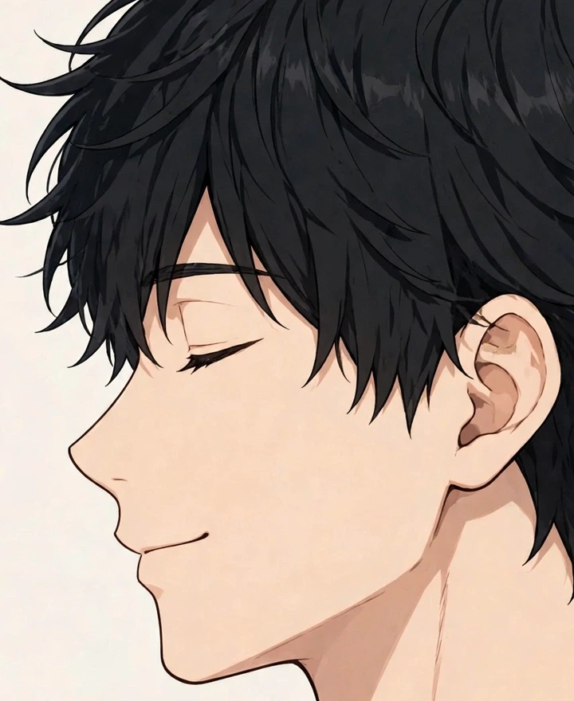
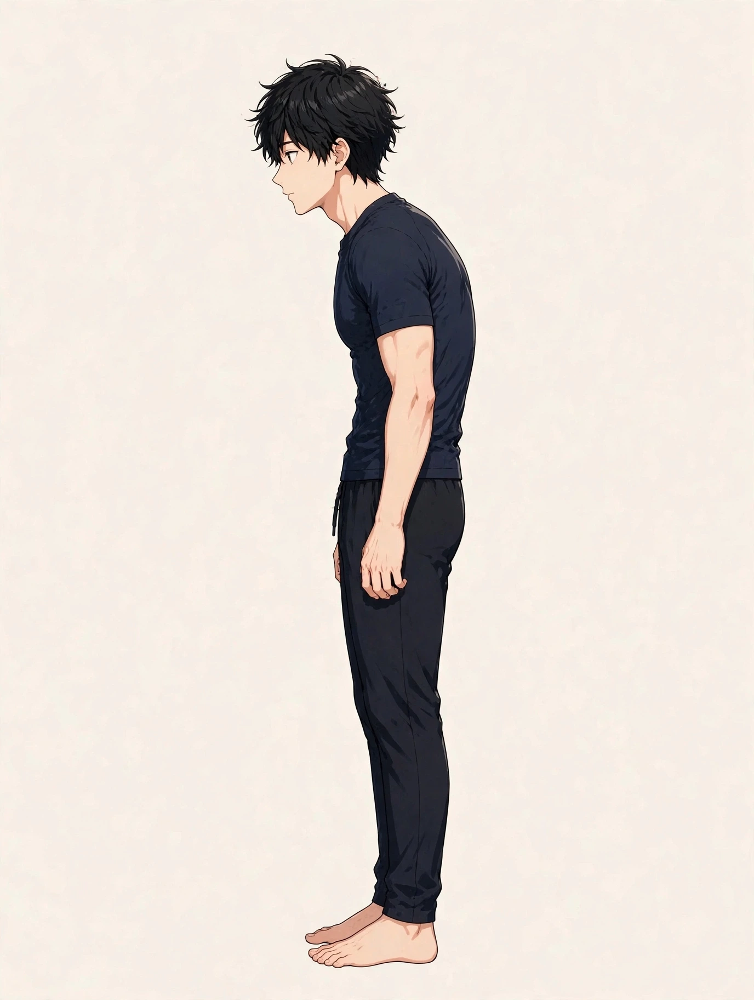
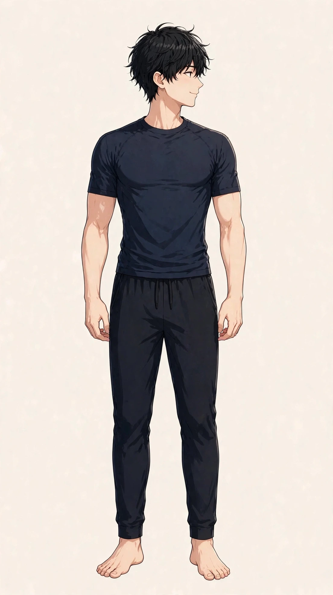
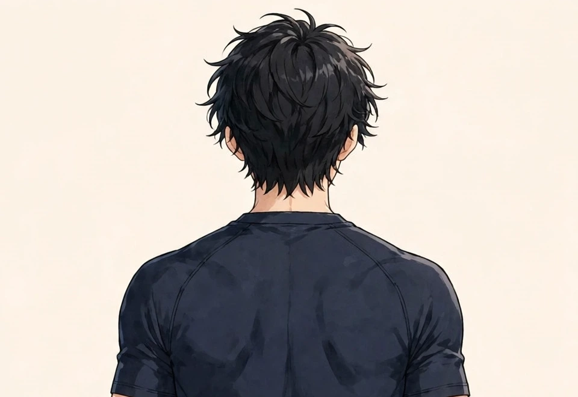

専門家の知識で読み解く肩こりのケア ｜ 東三国・新大阪
肩こりでお悩みの方へ東三国・新大阪の男性専用整体院 北辰堂

初回60分 2,000円（税込）からLINEで予約する
肩が石のように重い、夕方になると首から肩甲骨にかけて張ってくる——。肩こりは、東三国・新大阪・淀川区周辺で働く男性から最も多く聞く相談の一つです。
このページでは、肩こりに関係する筋肉の構造、男性のデスクワーク型に多い要因の整理、東洋医学の考え方とツボ、施術の考え方、セルフケア、受診の目安までを専門的にまとめました。一般的な健康情報としてご覧ください。
① 肩こりとは
「肩こり」と呼ばれる感覚の中心にあるのは、首から肩、背中にかけて広がる僧帽筋と、その奥で肩甲骨を引き上げる肩甲挙筋です。僧帽筋は後頭部から首、両肩、そして背中の中央までを覆う大きな筋肉で、頭の重さを支え、腕の動きを下支えしています。
筋肉が働き続けるということは、収縮した状態が長く続くということです。収縮が続くと筋肉内の血の巡りが滞り、疲労を感じる物質が溜まりやすくなり、重さ・張り・だるさとして自覚されると考えられています。
肩こりの感じ方には個人差が大きく、「肩の上が重い」「肩甲骨の内側が気になる」「首の付け根が張る」など表現もさまざまです。まずは、どのあたりに・いつ・どんな感覚があるかを整理することが、ケアの選び方の出発点になります。
僧帽筋は首から肩、背中の中央まで広がる大きな筋肉です。肩甲挙筋は首の横から肩甲骨の内側上部につながります。肩甲骨の下には棘下筋があり、肩の動きを支えています。位置は目安です。
ここからは、肩こりに関係する筋肉を一つずつ取り上げ、どこにつき（付着部）、どんな働きをし、負担がかかるとどう感じやすいかを整理します。ご自身の張りの中心がどこにあるかを見分ける手がかりにしてください。
僧帽筋は後頭部・首の付け根から肩先・肩甲骨・背中の中央まで広がります。上部・中部・下部で繊維の走行方向が異なり、働きも分かれます。
筋肉別に見る1：僧帽筋（上部・中部・下部）
僧帽筋は、後頭部と首の付け根から、両肩・肩甲骨、そして背中の中央（胸椎の下の方）まで広がる大きな筋肉で、その形が修道士の帽子（僧帽）に似ることから名づけられました。働きは場所ごとに分かれます。上部は肩甲骨を引き上げる（肩をすくめる）働き、中部は肩甲骨を背骨側へ寄せる働き、下部は肩甲骨を引き下げる働きを担い、腕を頭上へ上げる動作では肩甲骨を上方へ回す役割も果たします。デスクワークで負担が集中しやすいのは上部です。頭が前に出た姿勢では、頭の重さを後ろから支え続けるため、夕方にかけて重さや張りを感じやすくなります。また、中部・下部が働きにくくなると肩甲骨が外へ開いて前に丸まりやすくなり、上部の負担がさらに増えるという連鎖も起こります。図4に、僧帽筋の付着部と、上部・中部・下部で異なる筋繊維の走行を示します。
僧帽筋の下にある筋肉です。肩甲挙筋は頸椎から肩甲骨の上角へ、菱形筋は背骨から肩甲骨の内側の縁へつながります。
筋肉別に見る2：肩甲挙筋
肩甲挙筋は、首の骨（頸椎の上の方）の横から、肩甲骨の内側の上角へ斜めに走る筋肉です。肩甲骨を引き上げる働きと、首を横に倒したり後ろへ反らしたりする動きに関わります。肩をすくめる癖、電話を肩と耳で挟む姿勢、うつむき姿勢の持続などで負担がかかりやすく、首の付け根から肩甲骨の内側にかけての「奥の張り」として感じられることが多い筋肉です。表面の僧帽筋の下に隠れているため、指で揉んでも届きにくいと感じる場所でもあります。図5に示すように、肩甲挙筋と、その深層で肩甲骨を背骨へ引き寄せる菱形筋は、肩甲骨の内側のラインで重なって働いています。
筋肉別に見る3：菱形筋（小菱形筋・大菱形筋）
菱形筋は、背骨（頸椎の下部から胸椎の上部）と肩甲骨の内側の縁をつなぐ、僧帽筋の深層にある筋肉です。肩甲骨を背骨側へ寄せ、下方へ回す働きがあり、胸を張る姿勢や、物を手前に引く動作で使われます。長時間の前かがみ姿勢では引き伸ばされたまま固まりやすく、肩甲骨の内側の「こわばり」や、背中の上の方の重さとして自覚されます。「肩甲骨の内側がいつも気になる」という方は、僧帽筋だけでなく、この菱形筋まわりの状態も関係している場合があります（図5）。


胸鎖乳突筋は耳の後ろから胸骨・鎖骨へ、斜角筋は頸椎から第1・第2肋骨へつながります。
筋肉別に見る4：胸鎖乳突筋・斜角筋（首の前側）
肩こりというと背面に目が向きがちですが、首の前側の筋肉も無関係ではありません。胸鎖乳突筋は耳の後ろの骨から胸骨と鎖骨へ斜めに走り、首を回したり横に倒したりする筋肉で、頭が前に出た姿勢では頭の位置を保つために働き続けます。斜角筋は頸椎の横から第1・第2肋骨へつながり、首の安定と呼吸の補助を担います。このあたりの緊張が続くと、首の前側のつっぱり感として感じられることもあります。図6に、前面・側面から見た胸鎖乳突筋と斜角筋の位置と走行を示します。背面だけでなく前側とのバランスで見ることが、首・肩全体の負担を整理するうえで大切です。
筋肉別に見る5：大胸筋・小胸筋（肩の前側）
肩の前側にある大胸筋と、その深層の小胸筋も、肩こりの姿勢と関係します。小胸筋は肩甲骨の烏口突起から肋骨へつながり、肩甲骨を前へ傾ける働きがあります。デスクワークで肩が前に丸まった姿勢が続くと、小胸筋は縮んだまま固まりやすく、肩甲骨が前に引かれた状態が固定されます。その結果、背面の僧帽筋や菱形筋は引き伸ばされ続けることになります。「背面をほぐしても戻りが早い」と感じる場合、前側の張りが関係していることがあります。施術やセルフケアでは、背面だけでなく胸の前側を開く動き（セルフケア3）も組み合わせることが大切です。
② 要因の整理
男性のデスクワーク型の肩こりでは、作業姿勢と生活習慣の要因が重なっていることが多いとされます。代表的なものを整理します。
- 頭が前に出た姿勢の持続：モニターに顔を近づける姿勢では、頭の位置が体幹より前に出て、僧帽筋や肩甲挙筋が頭を支え続けます。負担は時間に比例して蓄積します。
- 肩が上がったままの作業：キーボードやマウスの位置が高い、緊張で力が入るといった条件では、肩をすくめる筋肉が働き続けます。本人は無自覚なことが多い要因です。
- 肩甲骨を動かす機会の少なさ：座り仕事中心の生活では、腕を大きく動かす機会が減り、肩甲骨まわりの筋肉が同じ長さのまま硬くなりやすくなります。
- 目の疲れとの連動：画面を凝視する作業では、後頭部から首にかけての緊張も高まります。眼精疲労と肩こりをセットで感じる方は多くいます。
- 筋力と運動量の低下：体を支える筋肉の量が減ると、同じ姿勢でも個々の筋肉への負担割合が増えます。加齢とともに肩こりを感じやすくなる背景の一つです。
- 冷えと血の巡りの滞り：冷房の風が直接当たる席、薄着での作業など、首・肩が冷える環境では巡りが滞り、張りを感じやすくなります。


耳の穴・肩の先・骨盤の中央・膝・外くるぶしがおおよそ一直線に並ぶ状態と、頭が前に出た姿勢との違いを示します。位置は目安です。
図7に、側面から見た姿勢ラインの目安を示します。負担の少ない姿勢では、耳の穴・肩の先・骨盤の中央・膝・外くるぶしが、側面から見ておおよそ一直線に並ぶとされます。頭が前に出た姿勢では耳の位置が肩より前へずれ、その分だけ首から肩の筋肉が頭を支える負担が増えます。壁に背中をつけて立ち、後頭部が無理なく壁に触れるかどうかを確認するだけでも、ご自身の頭の位置の傾向に気づけます。
要因は姿勢だけではありません。睡眠不足が続くと筋肉の緊張が抜けにくくなり、同じ負担でも張りを強く感じやすくなります。緊張やストレスが続く場面では無意識に肩が上がり、呼吸も浅くなりがちです。「忙しい週ほど肩が重い」という感覚には、こうした体の状態の変化も重なっています。作業環境の項目と体調の両面から振り返ることが、要因の切り分けに役立ちます。
③ セルフチェックリスト
肩まわりの状態を振り返るためのチェックです。当てはまる項目の数ではなく、ご自身の傾向に気づくための目安としてお使いください。
- 夕方になると肩の上が重く感じる
- 肩を揉んでもらうと「硬い」と言われることがある
- パソコン作業が長い日ほど症状が強い
- 肩甲骨の内側あたりがいつも気になる
- 頭痛や目の疲れをセットで感じることがある
- 気づくと肩に力が入っている
- 運動習慣がほとんどなく、歩く時間も少ない
- 休日は比較的楽に感じる
チェックは診断のためのものではありません。腕のしびれや力が入りにくい感覚がある場合は、肩こりとして片づけず、⑧の受診の目安を確認してください。



①左右へ倒す ②左右へ向く ③上・下を向く。各方向で左右差とつっぱりの場所を確認します。
自分でできるチェック1：首の可動域を確認する
チェックリストで傾向をつかんだら、動きそのものも確認してみましょう。椅子に座り、背筋を伸ばした状態で、①首をゆっくり右・左へ倒し、耳が肩に近づく角度に左右差がないか、②顔を右・左へ向け、あごが肩のラインまで回るか、③上を向いたときと下を向いたときのつっぱりの場所、を確認します。図8に、確認の手順と見るポイントを示します。痛みが走る動きは途中で止め、反動をつけずゆっくり行ってください。左右差が大きい場合や、動かすたびに同じ場所へ痛みが走る場合は、無理に伸ばさず⑧の受診の目安も確認してください。
自分でできるチェック2：圧痛点（押して響く場所）を探す
指の腹で、肩の上（肩井のあたり）、首の付け根、肩甲骨の内側の縁、肩甲骨の中央（天宗のあたり）を、左右を比べながらゆっくり押してみましょう。押したときに奥へ響くような感覚がある場所は、緊張が集まりやすい場所の目安になります。強く押し込む必要はなく、爪が白くならない程度の圧で十分です。チェックで見つけた場所は、⑥のセルフケアや④のツボ押しで優先的にゆるめる対象になります。ただし、押すと腕へしびれが広がる場合は、その場所への刺激は避けてください。
チェックの結果は、その日のうちにメモしておくと、施術の際に状態を伝える材料にもなります。「いつ・どこが・どの動きで」を一言で残すだけでも十分です。
④ 東洋医学から見た考え方とツボ
東洋医学では、肩まわりは気や血の巡りの要所の一つとされます。同じ姿勢が続くと巡りが滞り（気滞・瘀血といった考え方）、重さや張りとして感じやすくなると考えます。寒さや冷えも巡りを滞らせる要因とされ、冷房の強い環境で肩こりが強まる感覚ともつながります。
関係する経絡としては、肩の上を通る足の少陽胆経（肩井）、肩甲骨の中央を担う手の太陽小腸経（天宗）、背中の深い位置にある足の太陽膀胱経（膏肓）が代表的です。
肩井は肩の最も高い場所、天宗は肩甲骨の中央、膏肓は肩甲骨の内側の縁のあたりにあります。位置は目安です。押して響く場所を探してみてください。
ツボ：肩井（けんせい）
位置：首の付け根（うなじの一番出っ張った骨）と、肩先の中間点で、肩の最も高い場所にあります。反対側の手で肩をつかむと、指が自然に当たる位置です。
押し方：反対側の手の指の腹で、肩の筋肉をつかむようにゆっくり圧を加えます。5秒ほど押してゆっくり離す、を3〜5回。強く揉みほぐすのではなく、呼吸に合わせて圧を入れるのがコツです。
ツボ：天宗（てんそう）
位置：肩甲骨の中央にあるくぼみです。肩甲骨の出っ張り（肩甲棘）の下に指を当てると、小さなくぼみに触れます。
押し方：椅子の背もたれや壁とボールの間、または反対側の手の指で圧を加えます。体重を少しずつ預ける方法だと力を調整しやすくなります。痛気持ちいい程度で30秒ほどが目安です。
ツボ：膏肓（こうこう）
位置：背中の上部、背骨と肩甲骨の内側の縁の間あたりです。手が届きにくい場所のため、壁とボールを使う方法が向いています。
押し方：壁と背中の間にテニスボールなどを挟み、肩甲骨の内側に当てて体重を預けます。ゆっくり体を上下に動かし、響く場所を探してください。強く押しすぎず、1か所30秒程度に留めます。
首の付け根まわりにも、肩こりとあわせて使われる代表的なツボがあります。図9に、後頭部から首の付け根にかけてのツボの位置を示します。

風池はうなじの両側のくぼみ、天柱は首の後ろの太い筋肉の外側、髪の生え際の高さにあります。位置は目安です。
ツボ：風池（ふうち）
位置：後頭部の下、うなじの両側にあるくぼみです。髪の生え際のあたりで、耳の後ろの骨と、首の中央の太い筋肉の間にあります。胆経に属するツボとされます。
押し方：両手の親指をくぼみに当て、頭の重さを指に預けるようにゆっくり圧を加えます。目の疲れを感じるときにあわせて使われることも多い場所です。強く押しすぎず、呼吸に合わせて5秒ほど押して離す、を3回ほどが目安です。
ツボ：天柱（てんちゅう）
位置：首の後ろの太い筋肉の外側、髪の生え際の高さにあります。風池よりやや内側で、膀胱経に属するツボとされます。
押し方：親指の腹で、頭の中心へ向けてゆっくり押し上げます。首を後ろへ軽く倒すと指が入りやすくなります。めまい感があるときは無理をせず、短時間に留めてください。
⑤ 整体・リラクゼーションでの施術の考え方
北辰堂の施術では、まず僧帽筋の上部だけでなく、肩甲骨の動き、首の付け根、腕の付け根まで含めて緊張の分布を確認します。肩こりの訴えでも、硬さの中心が肩甲挙筋にある方、肩甲骨の内側に集まる方、腕側から引っ張られている方など、パターンは人それぞれです。
施術は、表面の筋肉から順に緩め、肩甲骨まわりの動きを引き出すことを意識します。強く揉むことだけが目的ではなく、施術後に肩を回したときの軽さや動きの変化を確認しながら進めます。
肩こりは生活の積み重ねで作られる側面が大きいため、一度の施術で完結するものではありません。当院では、施術とセルフケアと環境の見直しを組み合わせ、無理のないペースで体の状態を見ていく関わり方を大切にしています。
北辰堂の施術は、気になる部分だけを見るのではなく、姿勢や骨格の土台と巡りの両方を見ながら、深い圧で奥の張りまでほぐして整えていくのが持ち味です。施術のあとに「体が軽い」「呼吸が深い」と感じていただける状態を目指して組み立てます。
施術の進め方と、途中で確認するポイント
当院の施術は、60分・90分の枠の中で、①その日の状態の確認（張りの中心・左右差・動きの制限）、②表面の筋肉から順にほぐす、③肩甲骨まわりの動きを引き出す、④首の付け根と腕の付け根まで範囲を広げて整える、という流れで進めます。途中では、肩を回したときの軽さや、首の倒しやすさの変化を確認しながら圧の深さを調整します。強さの希望は遠慮なくお伝えください。「強く揉むほど良い」というものではなく、その日の筋肉の状態に合った圧で、奥の張りへ届かせることを意識しています。
当院では、鍼灸師としての専門知識にもとづき、肩こりに関係する筋肉・姿勢・生活習慣の要因を専門家の視点で整理しながら、施術の進め方を組み立てます。
料金
北辰堂の料金は、コースごとに初回と2回目以降の金額を分けてご案内しています。いずれも税込価格で、施術料以外の費用はかかりません。
| コース | 初回（初めての方） | 2回目以降 | 備考 |
|---|---|---|---|
| 整体・リラクゼーション 60分 | 2,000円（税込） | 6,000円（税込） | お支払いは現金のみ |
| 整体・リラクゼーション 90分 | 3,000円（税込） | 9,000円（税込） | お支払いは現金のみ |
初回に含まれること
- 問診：現在の状態や日常の負担、気になる部位をお聞きします。
- 姿勢チェック：姿勢や動きの左右差、肩甲骨の動きを確認します。
- 施術：その日の状態に合わせて、整体・リラクゼーションを行います。
- セルフケアのご案内：ご自宅で続けられるケアの方法をお伝えします。
初回60分 2,000円（税込）からLINEで予約する
⑥ セルフケア
仕事の合間に椅子に座ったままできるものを中心に紹介します。痛みが出る動きは中止し、勢いをつけずゆっくり行ってください。

両肩を大きく回して肩甲骨まわりを動かします。①指先を肩に置く ②肘で大きな円を描くように前回し・後ろ回し各5回 ③呼吸を止めずゆっくり行う、が基本の流れです。
セルフケア1：肩回し・肩甲骨回し
指先を肩に置き、肘で大きな円を描くようにゆっくり回します。前回し・後ろ回しを各5回ずつ。肩甲骨が背中の上で動く感覚を意識すると、僧帽筋全体の巡りが促されます。痛みが出る方向は無理に回さないでください。
セルフケア2：肩の上げ下げ（シュラッグ）
両肩を耳に近づけるようにゆっくり持ち上げ、3秒止めてからストンと力を抜いて落とします。これを5回繰り返します。力を入れる時間と抜く時間の差をはっきりさせることで、肩の力み癖に気づきやすくなります。
セルフケア3：胸を開くストレッチ
両手を背中の後ろで組み、肩甲骨を寄せながら胸を軽く開きます。あごを引いて15秒ほど保ち、ゆっくり戻します。前に丸まった姿勢の反対の動きで、肩の前側（小胸筋まわり）の張りをゆるめます。腰を反らしすぎないよう注意してください。
セルフケア4：蒸しタオル・入浴で温める
帰宅後はシャワーだけで済ませず、湯船に浸かって肩まで温める、または蒸しタオルを肩に5分ほど当てます。温めることで筋肉の緊張がゆるみやすくなります。熱すぎる温度は避け、心地よい範囲で行ってください。
①肩を下げて座る ②反対の手で頭を横へ倒す ③心地よい伸びで15秒ほど保つ。
セルフケア5：首の側屈ストレッチ
椅子に座り、右手を椅子の座面の縁に添えて肩を下げ、左手で頭を左へゆっくり倒します。首の右側が心地よく伸びるところで15秒ほど保ち、反対側も同様に行います。図10に手順を示します。肩が一緒に上がってしまうと伸びが弱くなるため、肩を下げたまま倒すのがコツです。倒す角度は「心地よい伸び」の範囲に留め、しびれが出る場合は中止してください。
セルフケア6：肩甲骨の寄せ・下げ
両腕を体の横に垂らし、肩甲骨を背中の中央へ寄せながら、同時にズボンの後ろポケットへ手を入れるような向きで下へ下げる動きを、ゆっくり5回繰り返します。僧帽筋の中部・下部を使う動きで、肩が前に丸まった姿勢のリセットに役立ちます。力を入れすぎず、呼吸を止めないで行ってください。
セルフケアの組み立て方
セルフケアは、たくさん行うよりも、毎日続けられる量に絞る方が、結果的に負担の蓄積を抑えやすくなります。目安は、仕事の合間に肩回し（セルフケア1）と上げ下げ（セルフケア2）を1セット、帰宅後の入浴で温め（セルフケア4）、入浴後や就寝前に側屈ストレッチ（セルフケア5）と肩甲骨の寄せ・下げ（セルフケア6）を行う流れです。③のチェックで見つけた圧痛点には、④のツボ押しを組み合わせてください。張りが強い日に、無理をして回数を増やす必要はありません。
セルフケアの補足：温める・冷やすの使い分け
温めることが向くのは、冷房や冷えで張りが強まったとき、慢性的な重だるさが続くときです。一方、運動の直後や、熱を持ってズキズキするような感覚があるときは、温めるとかえって不快になる場合があり、そのときは無理に温めず、まず安静にしてください。判断に迷うときは「冷えて固まった感じなら温める」を目安にし、感覚が強まるようなら中止してください。入浴で全身を温める方法は、首・肩だけでなく背中全体の緊張もゆるみやすいため、シャワーで済ませがちな方ほど試す価値があります。
動画で見るセルフケア
このページのセルフケアは、動画でも紹介しています。動きの流れを確認しながら、無理のない範囲でどうぞ。
⑦ 場面別の注意
- デスクワーク中：1時間に一度は立ち上がる・肩回しをするなど、姿勢を区切る工夫を。モニターの上端が目の高さに近いか、キーボードに手を置いたときに肩が上がっていないかも確認してください。
- 通勤・移動時：重いカバンをいつも同じ肩に掛けると、片側の僧帽筋に負担が偏ります。リュックにする、持ち替えるなど、左右の偏りを減らす工夫が有効です。
- 就寝時：枕が高すぎると首から肩にかけての緊張が続くことがあります。仰向けで首の後ろに隙間ができすぎないか、横向きで肩が圧迫されすぎないかを確認してみてください。
- 運動不足の週末：平日の凝り固まりをほぐすには、週末の散歩や軽い運動が助けになります。急な激しい運動ではなく、腕を振って歩く程度から始めるのがおすすめです。
- 家事・育児の場面：洗い物や調理で前かがみが続く作業や、子どもの抱っこでは、肩甲挙筋と僧帽筋の上部に負担が集まります。シンクの高さに合わせて踏み台を使う、抱っこ紐の肩ベルトの位置を調整するなど、姿勢そのものを変える工夫が有効です。
- スマホを見る場面：画面をのぞき込む姿勢は、頭が前に出る代表的な場面です。スマホを目の高さへ近づける、長時間の連続使用を区切る、といった工夫だけでも首・肩の負担は変わります。
- 運転の場面：長距離の運転では、シートに深く座り、ヘッドレストに後頭部が軽く触れる位置へ調整すると、頭を支える筋肉の負担が減ります。休憩ごとに肩回しを挟むのもおすすめです。
- 在宅ワークの場面：ダイニングのテーブルと椅子では、画面が低く座面の高さも合いにくいため、ノートパソコンの下に台を置いて画面を上げる、クッションで座面の高さを調整するなど、専用の作業環境に近づける工夫が負担を減らします。
⑧ 受診の目安
- 腕や手にしびれがある、ボタンが留めにくいなど手の動きに変化がある
- 肩だけでなく、胸の圧迫感や息苦しさを伴う
- 転倒や事故の後から痛みや張りが続いている
- 発熱や、原因の分からない体重減少を伴う
- 夜間の強い痛みで眠れない日が続く
- 数週間セルフケアを続けても強くなる一方である
肩まわりの感覚には、首（頸椎）の問題や、まれに内臓の疾患が関係する場合もあります。しびれや力の入りにくさがある場合は整形外科へ、胸の症状を伴う場合は内科・循環器科への相談も検討してください。気になる変化があれば、早めの受診が安心です。
受診先の選び方
受診先に迷う場合は、症状の中心で選ぶのが目安です。しびれや力の入りにくさ、首・肩の動きの制限が中心なら整形外科、今までにない強い頭痛や、ろれつ・見え方の変化を伴う場合は脳神経外科（緊急時は救急）、胸の圧迫感や息苦しさを伴う場合は内科・循環器科が相談先になります。どの科でも、「いつから・どこに・どんな感覚か」「腕のしびれの有無」を伝えられるよう、③のチェック結果をメモしておくと診察が進みやすくなります。
⑨ よくある質問
Q. 肩こりは揉めば揉むほどよくなりますか？
強く揉むことと状態の変化は比例しません。強すぎる刺激は筋肉を傷めたり、かえって緊張を招いたりする場合があります。当院では、その日の状態に合わせて圧の深さを調整しながら、肩甲骨の動きまで含めて整えていきます。
Q. どのくらいの頻度で通えばよいですか？
状態や生活環境によって異なるため、一律の頻度はお約束していません。初回に体の状態と日常の負担を確認し、セルフケアで対応できる部分と、施術で見ていく部分を分けてご提案します。無理な継続の勧誘は行いません。
Q. デスクワークの環境で、まず見直す点は何ですか？
優先度が高いのは、モニターの高さと椅子の座り方です。モニターの上端が目の高さに近く、椅子に深く座って足裏が床につき、キーボード操作で肩が上がらない環境が基本です。それだけでも夕方の負担感が変わる方は多くいます。
Q. 肩こりと頭痛が一緒に出ます。関係ありますか？
首から肩にかけての筋肉の緊張は、後頭部の重さや緊張型頭痛と関係すると考えられています。頭痛のページ（緊張型頭痛）もあわせてご覧ください。ただし、強い頭痛や今までと違う頭痛がある場合は、まず医療機関へ相談してください。
Q. 湿布や市販の塗り薬は肩こりに使えますか？
一時的に感覚が和らぐ方もいますが、筋肉の硬さそのものや、姿勢による負担を変えるものではありません。冷やすか温めるかの向き不向きは状態によって異なり、冷房で冷えた張りには温める方が合う場合が多くあります。皮膚のかぶれにも注意し、長引く場合はセルフケアと環境の見直しを組み合わせてください。
Q. マッサージチェアや電動のマッサージ器だけでも大丈夫ですか？
手軽に使える反面、圧の深さや当てる場所の調整が難しく、同じ場所へ長時間当て続けると筋肉を傷める場合があります。使う場合は1か所あたり短時間に留め、痛みが増すときは中止してください。肩甲骨の動きまで含めて状態を確認しながらの施術とは、役割が異なります。
Q. 肩こりの予防に運動は必要ですか？
体を支える筋肉の量が減ると、同じ姿勢でも個々の筋肉への負担割合が増えます。腕を振って歩く、肩回しを日課にするなど、肩甲骨まわりを大きく動かす習慣は予防の土台になります。急に激しい運動を始める必要はなく、続けられる強度から始めてください。
Q. 初回は本当に2,000円ですか？追加でかかる費用はありますか？
はい。60分コースの初回は2,000円（税込）、90分コースの初回は3,000円（税込）です。施術料以外の費用はかかりません。お支払いは現金のみとなります。
Q. 2回目以降はいくらですか？
60分コースは6,000円（税込）、90分コースは9,000円（税込）です。料金は「料金」の節と料金・メニューページにもご案内しています。
肩こりと間違えやすい症状との違い
肩まわりの不調は、すべてが同じ「肩こり」とは限りません。感じている場所と、動きの制限の有無によって、関係する部位が変わります。代表的なものを整理します。切り分けは診断ではありませんが、ケアの選び方と受診先を考える目安になります。
首こりとの違い
首こりは、首そのもの（頸部）の筋肉や関節まわりの張りが中心で、首を動かしたときのつっぱりや、首の付け根の重さとして感じられます。肩こりは僧帽筋を中心とした、肩から背中にかけての広い範囲の感覚です。実際には両方が重なっていることも多く、首の動きの制限が強い場合は首こり・頸部痛のページもあわせてご覧ください。
緊張型頭痛との関係
肩こりとセットで出やすい頭痛に、緊張型頭痛があります。首から肩の筋肉の緊張が続くことで、後頭部から頭全体を締めつけるような重さとして感じられると考えられています。「夕方に強くなる」「肩の張りと同時に起こる」といったパターンが手がかりです。ただし、今までにない強い頭痛や、日に日に強くなる頭痛がある場合は、まず医療機関へ相談してください。
四十肩・五十肩との違い
四十肩・五十肩（肩関節周囲炎）は、肩関節そのものの炎症や動きの制限が中心で、「腕が上がらない」「後ろに手が回らない」「夜にズキズキ痛む」といった特徴があります。肩こりは筋肉の張りや重さが中心で、腕の上がり方そのものは保たれていることが多い点が違いです。腕を上げる動きに明らかな制限がある場合は、肩こりのケアで様子を見るのではなく、整形外科への相談も検討してください。詳しくは五十肩・四十肩のページをご覧ください。
眼精疲労との関係
画面を凝視する作業が続くと、目の疲れと肩の張りを同時に感じる方が多くいます。ピント調節に関わる目の負担と、画面へ顔を近づける姿勢の負担が重なるためと考えられています。肩だけをゆるめても夕方の張りが戻る場合は、モニターとの距離や明るさ、休憩の取り方など、目まわりの環境もあわせて見直してみてください。
北辰堂のご案内
北辰堂は、大阪市淀川区東三国二丁目にある整体院です。男性スタッフ1人で運営しているため、男性専用としています。施術歴30年の平賀伸人（鍼灸師・国家資格）が、整体とリラクゼーションを行います。当院では鍼灸施術は行いません。営業は平日・土曜17:00〜22:00、日曜10:00〜22:00の完全予約制です。料金は60分 初回2,000円／2回目以降6,000円、90分 初回3,000円／2回目以降9,000円で、お支払いは現金のみです。プライバシーへの配慮のため、詳しい住所はご予約確定後にLINEでご案内します。
メニュー・料金は料金・メニューページ、施術者については当院についてをご覧ください。
関連するお悩み
ご予約・ご相談はLINEから
東三国・新大阪・淀川区周辺で、体のケアの相談先をお探しの方は、LINE公式アカウント（北辰堂）からお気軽にご連絡ください。現在の状態をお聞きしたうえで、施術の進め方をご案内します。
初回60分 2,000円（税込）からLINEで予約するさらに学びたい方へ：現場で使われる専門書（PR）
このページのテーマに合わせて選んだ本と、当店の施術でも参考にしている専門書です。


※本ブロックのリンクはAmazonアソシエイト・プログラムおよび楽天アフィリエイトによる広告リンクです。使用感の保証をするものではありません。